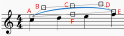
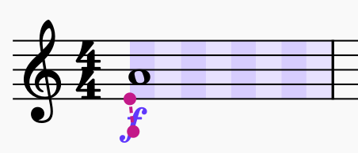
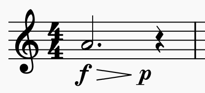
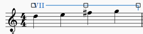

Adjusting elements directly
This chapter explains methods to fine tune the literal positioning of elements on a score for layout purpose. The more common musical editing methods are explained in Entering and editing text, and Editing notes and rests chapters.
Changing the position of elements
To fine tune the literal positioning of elements on a score, either
- Drag it, see also Snap to grid chapter, or
- Select element(s) on a score, adjust their Offset property, see Properties panel chapter. or
- Use Edit mode.
To enter Edit mode, either
- Right-click → Edit element on an element on a score, or
- Select an element on a score, use the keyboard shortcut
F2, or - Select an element on a score, use the keyboard shortcut
Alt+Shift+E(Mac:Option+Shift+E)
Then, in Edit mode, press the keyboard arrows Left Right Up Down to move the object in step of 0.5 sp, or
* Edit it directly, this method does not work on notes, rests, and elements added from "Master palette : Symbols" (see Other symbols chapter). Select element(s) on a score, press the keyboard arrow keys Left Right Up Down to move in small steps (0.1 sp). In combination with Ctrl (Mac: Cmd), they are moved in large steps (1 sp).
Read more about spatium (sp.) in Page layout concepts chapter.
Changing the shape of elements
To change the shape of elements such as slurs and ties after adding them to the score:
- Click on the slur or tie to be adjusted
- Click and drag the adjustment handles that appear around the element (N.b. red letters in the below diagram are for reference only)\

Note that:
- Handles B, C, and D change the shape of the curve at that point
- Handles A end E adjust the element's length (This can also be achieved by pressing
Shift+Left/Rightto move the ends one chord/rest at a time) - Handle F repositions the whole line without changing its shape or length
If you wish to change the note to which a slur or tie is connected, the recommended method is to use the keyboard shortcuts described above (Shift+Left/Right). This is the most efficient way of changing both the visual and playback range of notes encompassed by a slur or tie.
Anchors
Some types of item – dynamics, hairpins, tempo text, pedal marks – do not have to be attached directly to notes or rests, but can also be attached to rhythmic positions within a duration. We call these anchors.
In general, items cannot be added directly to an anchor point within a duration, but must be added to a note or rest and then moved into the required position. The keyboard shortcuts to move between anchor points are Shift+Left/Right (the same shortcuts that move other types of item between notes). The anchor positions are stored in the file as real rhythmic positions, so items will stay in the correct place when the score reformats.
If you select an 'anchorable' item and press Shift, you will see a visualisation of the available anchors in that bar as alternating dark and light rectangles. The colour is determined by the voice to which the item is assigned (purple for all voices, blue for voice 1, green for voice 2, etc.) Each slice represents a rhythmic subdivision to which you can anchor the item.

Moving between anchors
To move an item between anchors, hold Shift and press Left or Right:

With lines (hairpins, pedal markings), both ends can be moved independently.
By default, the subdivisions shown are half of the beat as determined by the time signature (so, in this example, half of the quarter beat, i.e. eighth notes). However, anchors will also be shown for notes on other staves which are at rhythmic positions that fall outside of these subdivisions, which means you can align an item to notes on other staves, whatever their position:

Moving dynamics to the 'end of duration' position
By using Shift+Alt+Left/Right, you can step not just between rhythmic subdivisions but also the end of each of those subdivisions. This is a special position; for a dynamic, the end of one duration is not the same as the start of the following one (which may have its own dynamic – or may be a rest.) This is most commonly encountered in something like this form:

To input the dynamics in this example:
- Add a f dynamic to the note
- Add a hairpin to the note; it will end on the rest
- Add a p dynamic to the hairpin (which will put it at the endpoint of the hairpin, i.e. on the rest), or directly onto the rest
- Select the dynamic and press
Shift+Alt+Left, which will move the dynamic to the end of the last subdivision of the previous note
Note that hairpins cannot be moved to an 'end of duration' position; if there is no dynamic, then the distinction is meaningless. Therefore, the dynamic should be moved, and any hairpins will follow.
For clarity, when moving hairpins or other lines, the subdivisions that the item spans are shaded darker so you can see the range it spans:

Working with lines
See also the main chapter Other lines.
Changing the range of a line
To change the start and end points of a line:
- Select the line to reveal its adjustment handles\

- Press
Shift+Left/Rightto move the end of the line one step at a time (a step = one note/rest, or one measure—depending on the line type). * Note: You can click or useTabto move the focus between handles when adjusting. Focus on the left handle to move the beginning of the line. - Fine-tune the position of handles using the
LeftorRightarrow keys if required. Note that this does not affect the playback range of the line.
As with slurs and ties, it is recommended to use Shift when adjusting line length with the arrow keys to ensure that the playback range also adjusts accordingly.
Creating diagonal lines
Although lines are horizontal by default, they can be set at any angle simply by dragging the start or end adjustment handles; or by selecting a start/end handle and using the Up or Down arrow keys.
Editing text of Text line objects
To edit the displayed text of Text line objects (such as "system text line", "stave text line", and "barré line", see Entering and editing text):
- Select a text line element
- Go to the Properties panel
- Open the Text tab in the Text line section
- Edit these fields * Beginning text * Text when continuing to a new system: the text to display if the object spans more than one system (page layout concept), see Page layout concepts chapter.